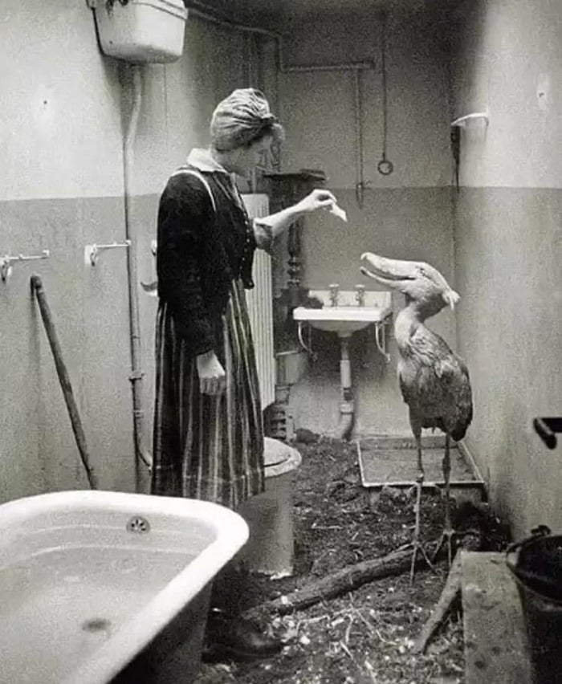

Como aponta matéria do History Collection, o Balaeniceps rex era uma das espécies que viveu no famoso Zoológico de Berlim, região que foi constantemente bombardeada durante a Segunda Guerra Mundial.
Os ataques começaram em novembro de 1943 e se estenderam até a metade de 1945 — um ano antes do fim da Guerra, por exemplo, o zoo foi atingido em, pelo menos, sete ocasiões, embora nunca tenha deixado de funcionar nessa época.
Quando o Exército Vermelho invadiu Berlim, o pouco que sobrou do local foi completamente destruído. Entre os sobreviventes estava uma Cegonha-cabeça-de-sapato, que foi salva por uma cuidadora, que o levou para casa e manteve o an.
